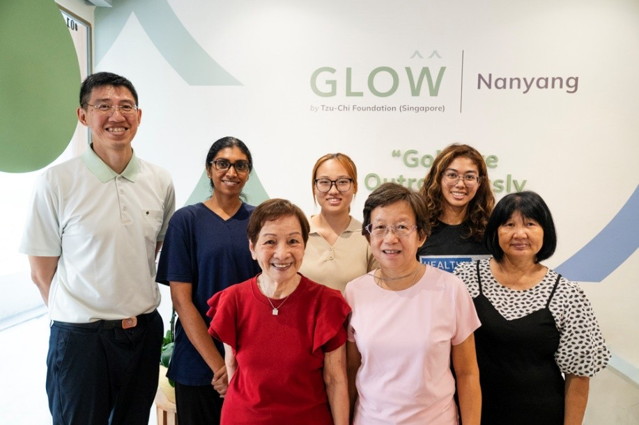

Programme provider
Tzu Chi Singapore
The foundation brings community care and caregiver support together through Humanistic Hands and Heart.
Visit Tzu Chi Singapore →

Community care and digital support
A Tzu Chi Singapore initiative developed at GLOW (Nanyang), with Healthy-Tec and support from Income OrangeAid.

Programme provider
The foundation brings community care and caregiver support together through Humanistic Hands and Heart.
Visit Tzu Chi Singapore →Community care setting
A Tzu Chi Active Ageing Centre where P3H was soft-launched on 1 April 2026. Caregivers can use platform tablets at GLOW, and Crystal reward vouchers are collected at the centre.
About visiting GLOW →Technology collaboration
The digital enablement and community technology partner that collaborated with GLOW to develop P3H's physical and digital support approach.
Grant support
P3H is supported by the Income OrangeAid Caregiver Support Accelerator Grant, a strategic partnership between Income Insurance and the National Council of Social Service. Tzu Chi is one of 10 social service agencies in the first cohort.
Read the official grant announcement →Year 1
700
Establish programme foundations and work towards reduced caregiving burden.
Year 2
900
Scale participation and strengthen programme consistency.
Year 3
1,200
Embed effective practices and sustain improvements in caregiver well-being.
These are programme targets, not reported achievements. The yearly targets total 2,800 caregivers.
Contact the P3H team to ask about Tzu Chi SEEN and Longevity Courtyard, and which activities may be relevant to your needs.
Ask about community connections